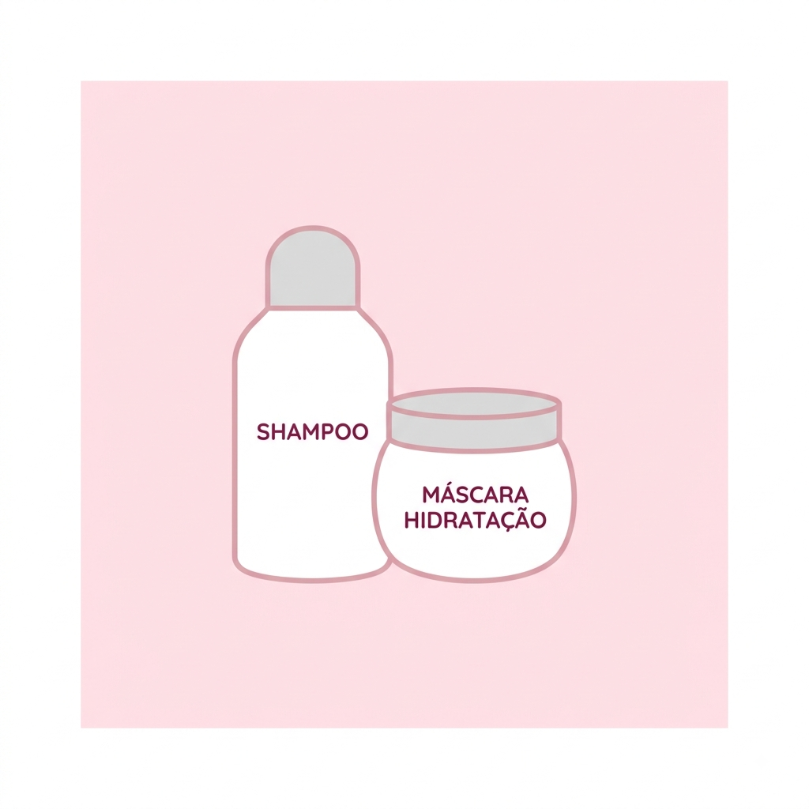

O que é Cronograma Capilar?
Por: Grasiellen Pacheco Moreira
O cronograma capilar é uma rotina de cuidados dividida em três etapas principais: Hidratação, Nutrição e Reconstrução. Cada uma devolve nutrientes vitais aos fios.
Fonte: Dicas Capilares